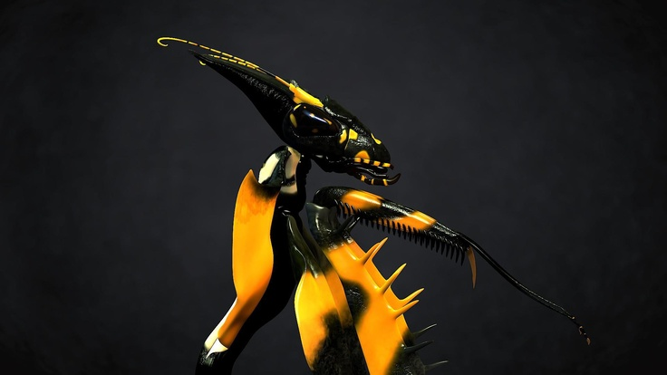

Богомол

Богомолы — хищные насекомые, выделенные в одноименный отряд Богомоловых, насчитывающий 2853 вида. Своим необычным названием они обязаны отнюдь не ангельскому характеру, а особой охотничьей позе, в которой они складывают передние лапки в позе молящегося человека. Размеры этих насекомых колеблются от 1 до 11 см. Внешний вид богомолов может быть очень разным, тем не менее, у всех видов этих насекомых можно найти общие черты. Для них характерна маленькая, подвижная голова треугольной формы и узкое тело с длинными, суставчатыми конечностями, придающими им сходство с кузнечиками или палочниками. Но с точки зрения систематики с кузнечиками у богомолов нет ничего общего, палочников можно считать лишь их дальними родственниками, а по-настоящему братские узы связывают этих насекомых с тараканами. Врагами богомолов считаются птицы, хамелеоны, змеи. Но и сами они не лыком шиты. Богомолы очень прожорливы и за несколько месяцев жизни успевают уничтожить несколько тысяч насекомых размером от тли до кузнечика, а иногда покушаются даже на позвоночных животных. Каннибализм для них — норма жизни, причем проявляется он подчас в самый неожиданный момент. Давно замечено, что после спаривания более крупная самка богомола частенько закусывает своим избранником, в исключительных случаях она приступает к этому неблаговидному занятию еще в процессе любовных утех. Чтобы уменьшить риск быть съеденным, самец перед спариванием выполняет ритуальный танец, который помогает самке отличить партнера от добычи и настроить ее на миролюбивый лад.